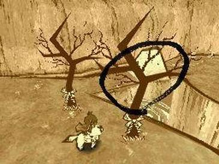
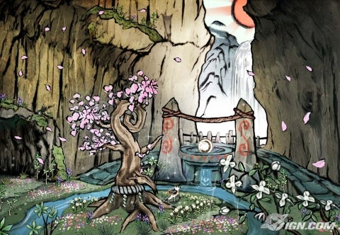
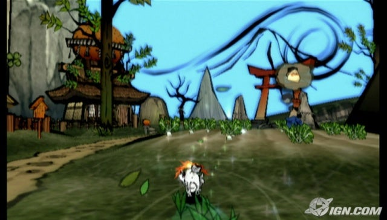

Ōkamiden is an action-adventure video game published by Capcom for the Nintendo DS. It is a direct sequel to the PlayStation 2 and Wii title Ōkami.
“Taking place a few months after the events of Ōkami, Ōkamiden will follow the adventures of Chibiterasu – a young sun god who is summoned to protect the land. Chibiterasu will join forces with a rich cast of characters to fight off a new threat that has once more leeched the world of its vibrant colour. Using the DS stylus, players will wield the Celestial Brush controlled by Chibiterasu. This powerful tool can attack enemies, paint helpful objects and structures into existence, and help Chibiterasu perform exceptional feats that will change the world before the player’s eyes. Chibiterasu’s partners in the game will have unique abilities of their own that help the player conquer puzzles and face an onslaught of perilous challenges. By blending vivid myth, artistic action and the innovative Nintendo DS, Ōkamiden has all the makings of a handheld classic. Ōkamiden takes the best elements of the Ōkami series and combines them with invigorating new features delivering an extraordinary adventure sure to please fans of the series and newcomers alike.”
Release Date: March 15, 2011

Ōkami is an action-adventure video game developed by Clover Studio and published by Capcom. It was released for Sony’s PlayStation 2 video game console in 2006 in Japan and North America, and 2007 in Europe and Australia. Despite the closure of Clover Studio a few months after the game’s initial release, a version for Nintendo’s Wii console was developed and produced by Ready at Dawn, Tose and Capcom, which was released in North America in April 2008, in Europe in June 2008, and in Japan in October 2009.
Set sometime in classical Japanese history, Ōkami combines several Japanese myths, legends and folklore to tell the story of how the land was saved from darkness by the Shinto sun goddess, named Amaterasu, who took the form of a white wolf. It features a distinct sumi-e-inspired cel-shaded visual style and the Celestial Brush, a gesture-system to perform miracles.
Ōkami was one of the last PlayStation 2 games selected for release prior to the release of the PlayStation 3. Although it suffered from poor sales, Ōkami earned considerable acclaim from reviewers and earned, among other awards, the title of IGN’s 2006 Game of the Year. The Wii version has earned similar praise though the motion control scheme has received mixed reviews.


After hearing of Okami from Chuggaaconroy on youtube, I was dying to buy the game myself. As it happens, There are not any pre-owned or new Okami games within a 35 mile radius of where I live.
I pre-orderd Okamiden just last week and hoping to find Okami in a store near me.
P.S. Does anyone watch Chuggaaconroy’s videos on youtube?